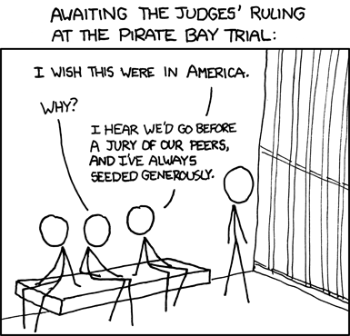

War on Torrenting
With the recent shutdown of KickAssTorrents, I often get asked the question “Well does this mean torrenting is over? I guess the government has won the war on torrenting?”. My response to this question is always “possibly, but the war was not won because of the government”. In fact, I am not sure if the government stood a chance against torrenters.
You see while it is true, KickAssTorrents has been shut down and the owner of the website could be facing charges, these actions usually have little effect on the swarm.
For example, the PirateBay was shut down numerous times and the founders have been arrested almost every year. Despite efforts made by law enforcement, proxies resurface and people are still able to torrent.

But that does not mean it is impossible to combat torrenting. First of all, try and understand why the average person torrents, to download and watch movies. It is much easier to download and watch a movie at home than to get out of the house and pay for a movie. Solution? Provide an affordable way for the average user to watch movies while at home.
Netflix, a multimedia streaming service is an example of an affordable solution. Netflix costs around $8/month and has a very large collection of both movies and television shows. It seems to be working; Sandvine reports that in 2016, Netflix represents about 35.2% of traffic in North America. The same report indicates that BitTorrent only represents 5% of internet traffic, a steady decline from 40% in 2011.
So yes, the War On Torrenting may be over; but I hardly think the victors are the government. Companies such as Netflix and Youtube that have made it affordable for the average person to sit at home and watch a movie.